A moody living room gets mistaken for a dark, closed-in one far more often than it really should.
Done well, it reads as enveloping and genuinely restful, not cave-like. The difference comes down to a specific set of real choices, not just a dark paint color.

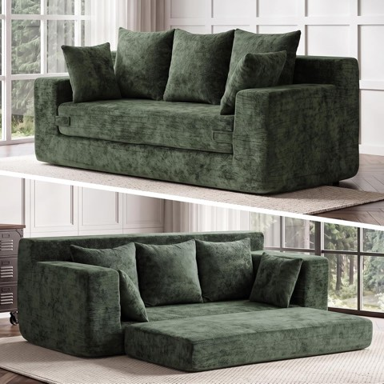
4-in-1 Boneless Sofa Bed, 70 Inch, with Storage Pocket and 5 Pillows, Plush Velvet
Shop on Amazon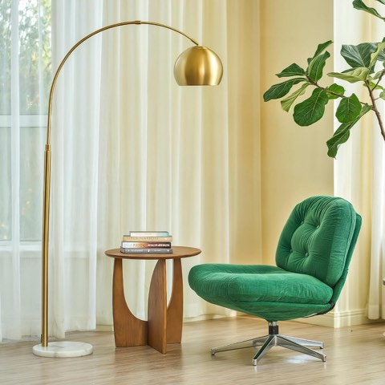
CO-Z 69 Inch Modern Arc Floor Lamp, Gold, Adjustable Metal Shade, Marble Base
Shop on Amazon1. Balance With Pops of Light Neutrals
A cream throw, a pale rug, or white bedding-style textiles give the eye somewhere to land in an otherwise dark room.
This contrast is what keeps the room reading as dramatic and intentional rather than simply dark.
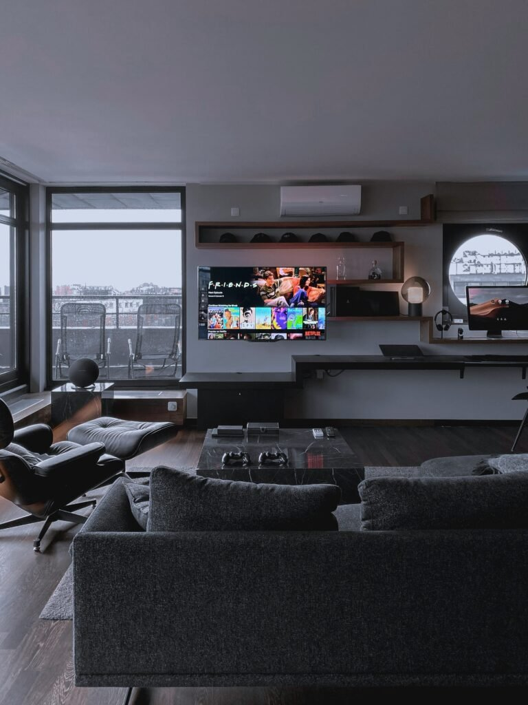
2. Play With Layered Accessories
A few considered objects, in varying textures and slightly varying dark tones, finish the room without requiring any additional color.
Restraint matters here, a handful of deliberate pieces reads better than a room full of smaller decorative items.
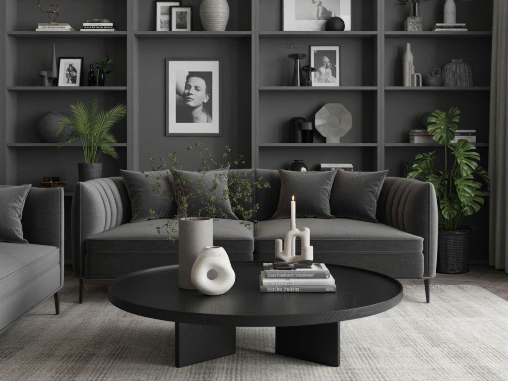
3. Add Moody Greenery
Deep green plants with substantial leaves fit a moody palette far better than delicate, pale varieties.
This also brings a bit of life and movement into a room that could otherwise feel static.
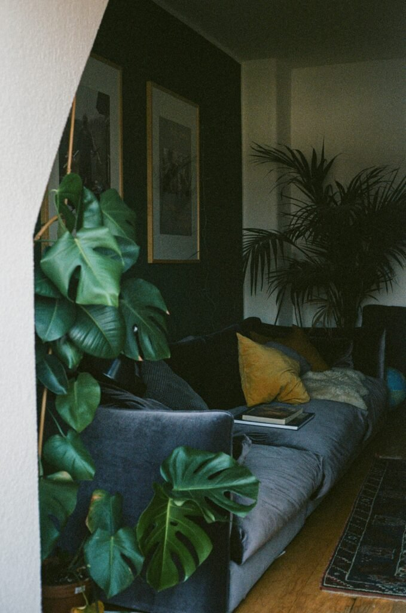
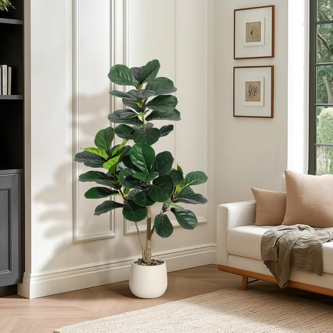
4 Ft Artificial Fiddle Leaf Fig Tree with 48 Leaves, Realistic Faux Ficus Lyrata
Shop on AmazonASTIDY 5 Ft Artificial Monstera Deliciosa Plant, Faux Tropical Palm Tree with White Planter
Shop on Amazon4. Use Mirrors to Reflect Light
A well-placed mirror bounces whatever light exists back into the room, directly countering the one real risk of a dark palette, a room that reads as too dim.
This is one of the simplest, most overlooked tools for keeping a moody room from tipping into actually dark.
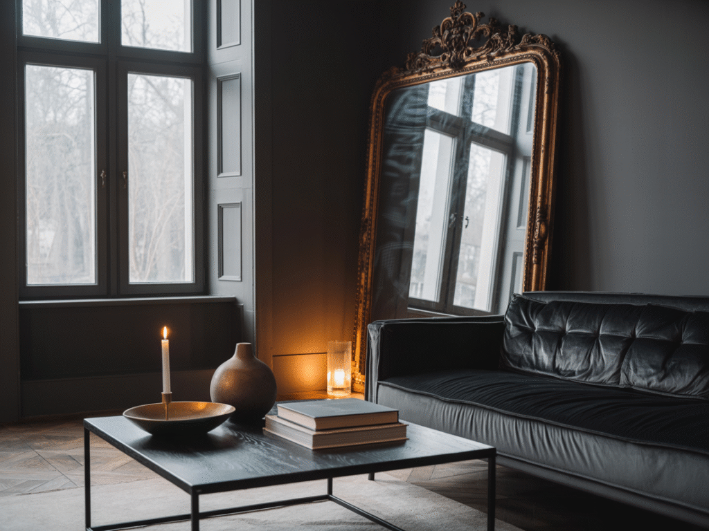
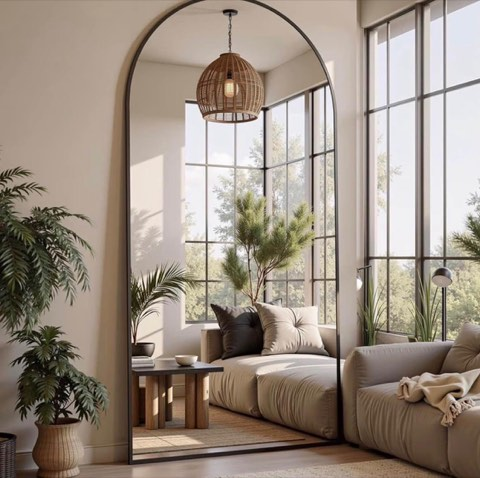
Arched Full Length Mirror with Stand, 76 x 34 Inch, Black Aluminum Frame
Shop on Amazon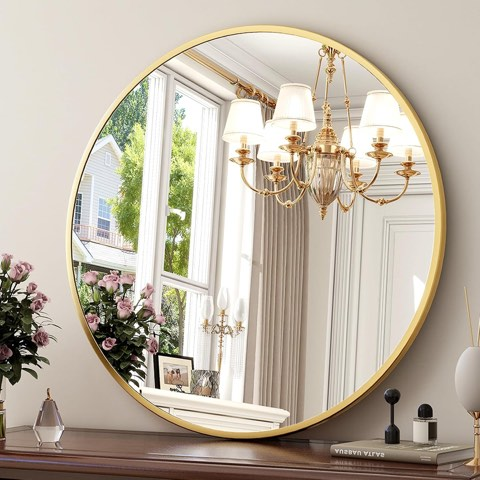
XRAMFY 30 Inch Round Gold Circle Wall Mirror, for Bathroom and Entryway
Shop on Amazon5. Experiment With Pattern
A patterned pillow, rug, or wallpaper moment adds visual interest without requiring a full color change.
Darker-toned patterns specifically tend to blend more naturally into a moody room than bright, high-contrast ones.
6. Bring In Statement Furniture
One bold, well-chosen furniture piece reads as more intentional in a moody room than it would in a lighter, busier one.
The dark backdrop actually does some of the styling work, letting a single piece genuinely stand out.
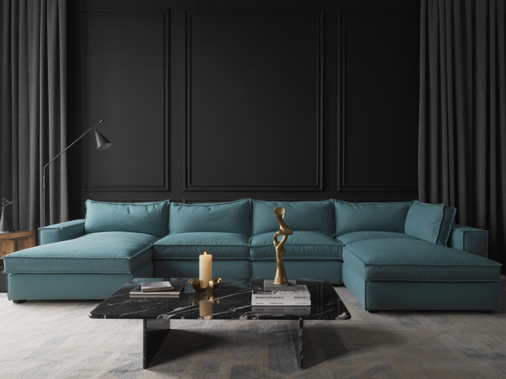
7. Create Depth With Dark Wood Tones
Dark wood furniture against dark walls sounds risky but actually creates a cohesive, layered depth rather than a flat block of one color.
Varying the exact wood tone slightly piece to piece keeps this pairing from feeling monotonous.
8. Add Layers With Rugs and Curtains
A textured rug and floor-length curtains in complementary dark tones round out the room's enveloping feel from floor to ceiling.
This layering is what keeps the walls from feeling like the only dark element in an otherwise ordinary room.
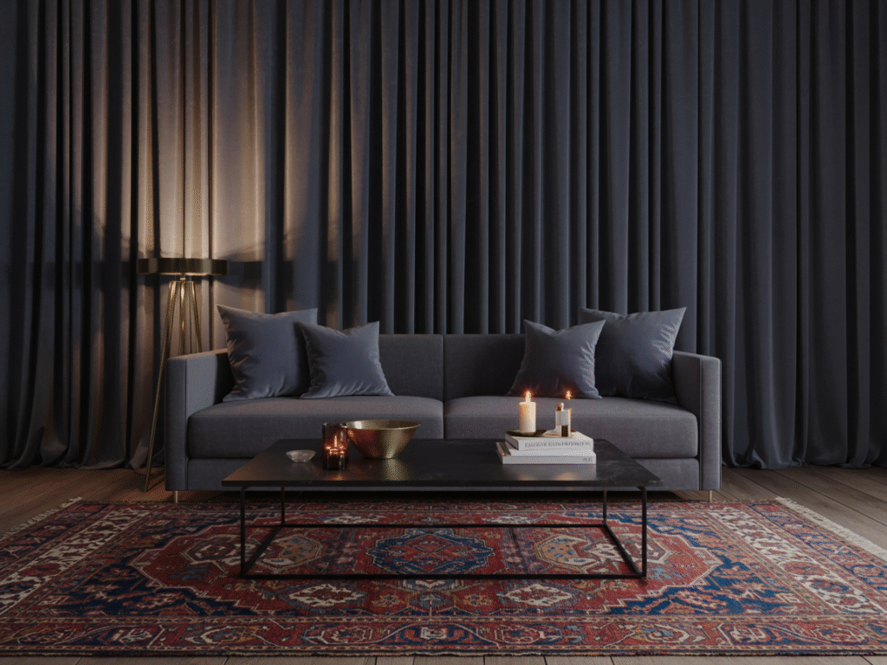
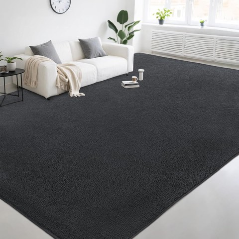
8 x 10 Ft Dark Grey Memory Foam Area Rug, Solid Indoor Rug for Living Room
Shop on Amazon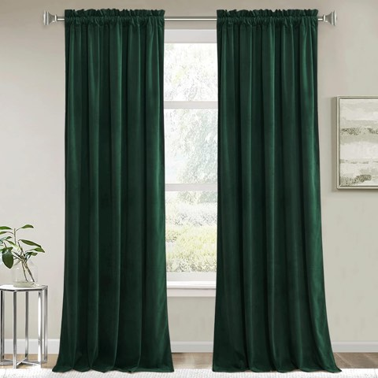
RYB HOME Green Velvet Blackout Curtains, 84 Inches Long, for Bedroom and Living Room
Shop on Amazon9. Play With Dramatic Artwork
One large, confident piece of art works especially well against a dark wall, where it gets to stand out rather than compete with a busy, lighter background.
This is one of the easiest ways to add a genuine focal point to an otherwise monochromatic room.
10. Use Metallic Accents for Contrast
Brass, gold, or warm bronze details catch available light in a way that keeps a dark room from reading as uniformly flat.
A little goes a long way, a few well-placed accents outperform metallic surfaces scattered everywhere.
11. Mix Rich Textures
Velvet, bouclé, leather, and other tactile materials add visual depth that a dark flat surface alone can't provide.
This matters more here than in a lighter room, since there's no color variation doing that work instead.
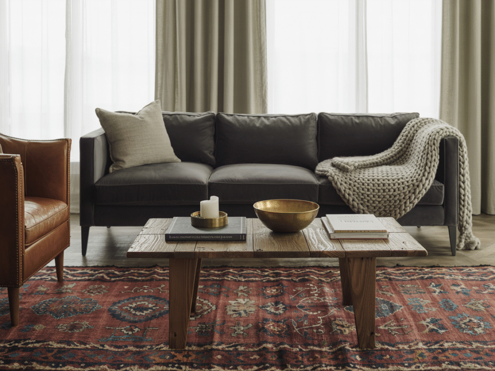
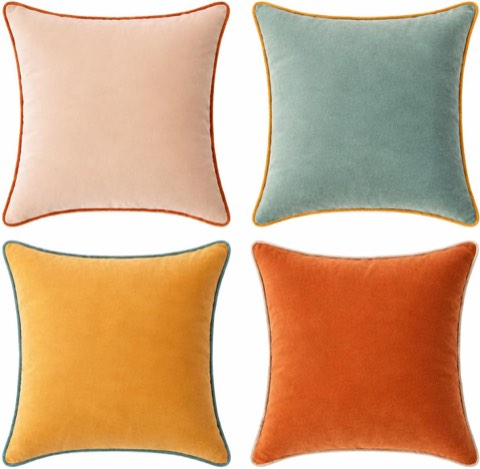
MONDAY MOOSE Decorative Velvet Throw Pillow Covers, Set of 4, Double-Sided Modern Colors
Shop on Amazon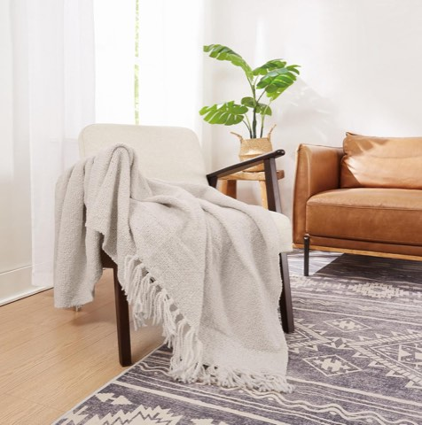
Brooklyn Loom Chunky Boucle Textured Microfiber Throw Blanket, 50 x 70 Inch, Greige
Shop on Amazon12. Layer In Cozy Lighting
Warm, layered lighting is what keeps a dark room from feeling flat or heavy, a single overhead fixture in a moody room reads as genuinely gloomy.
This is the single most important detail for making the look actually work, more than the wall color itself.
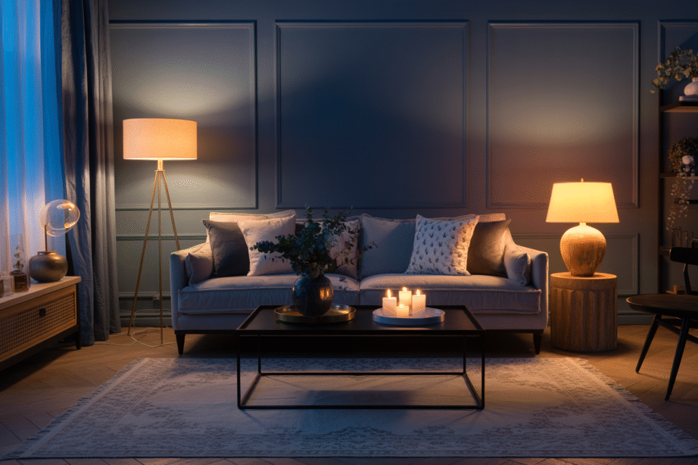
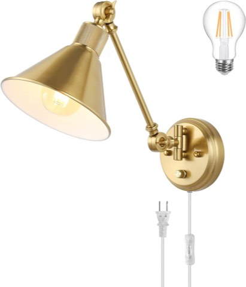
TRLIFE Plug-In Dimmable Wall Sconce, Brushed Brass Swing Arm Wall Light
Shop on Amazon13. Go Bold With Deep Wall Color
A genuinely deep color, charcoal, forest green, deep navy, on the walls sets the foundation the rest of the room builds on.
Testing the color under the room's actual lighting matters more here than with almost any lighter paint choice.
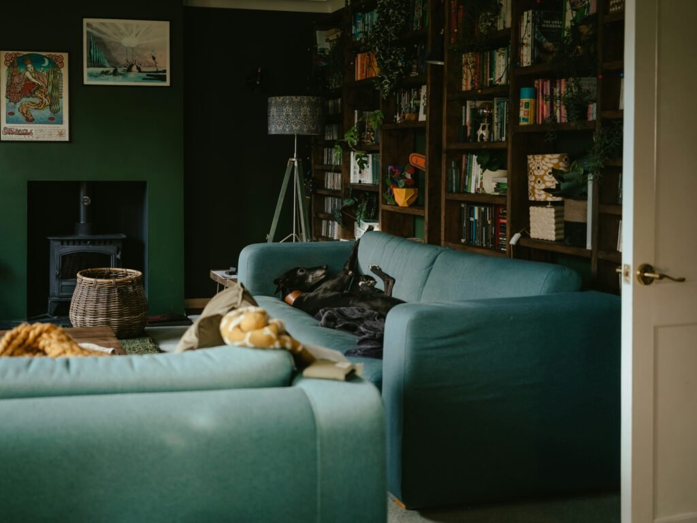
Samplize Benjamin Moore Cushing Green Peel and Stick Color Sample, HC-125
Shop on Amazon
The Psychology Behind It
Darker, warmer spaces genuinely read as calmer to the nervous system than bright, high-contrast ones, which is part of why the look has real staying power beyond trend cycles.
This isn't purely aesthetic preference, there's a real psychological reason the look feels restful rather than oppressive when done correctly.
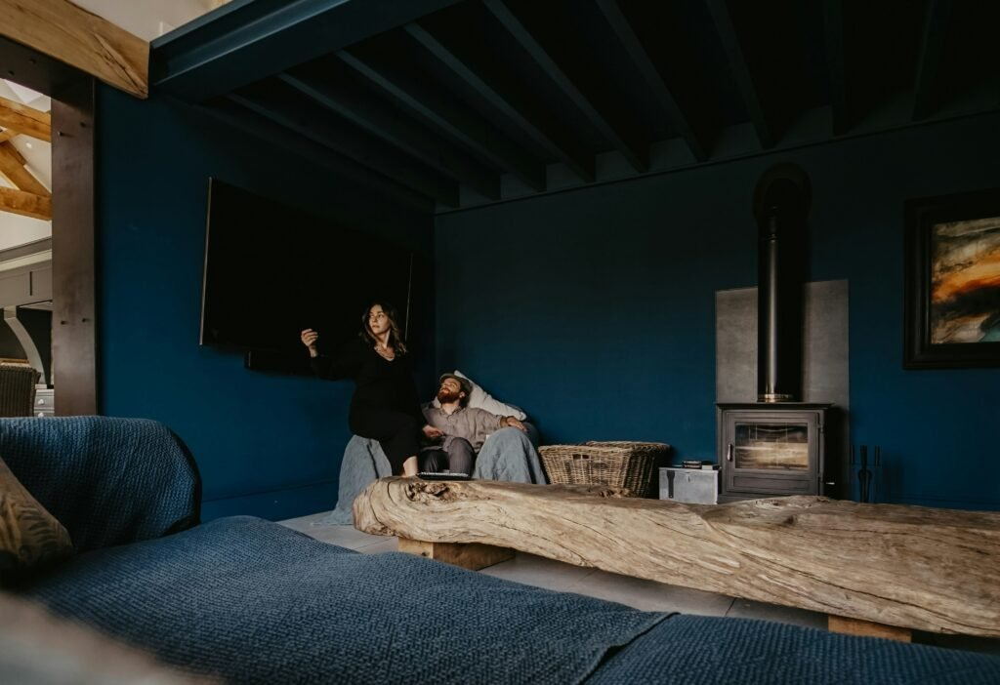
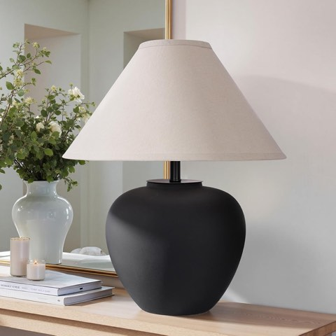
YEPDIN Ceramic Pot Table Lamp, 18.5 Inch, Frosted Black Nightstand Lamp with Tapered Shade
Shop on AmazonBusting the Myths
The biggest misconception is that dark automatically means small-feeling, in practice, a well-lit moody room often feels just as spacious as a lighter one, since the eye stops measuring hard corners.
The idea that moody rooms only work in large spaces also doesn't hold up; a smaller room handles the look just as well with the right lighting.
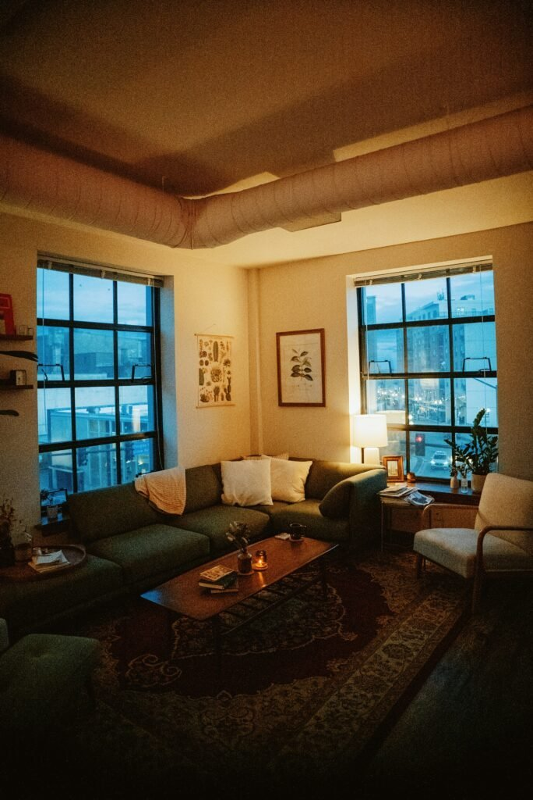
Why Choose a Moody Living Room
A darker palette makes a room feel more intimate and enveloping, especially in the evening, when most living rooms actually get used.
It also photographs with genuine depth that a brighter, flatter room often lacks.
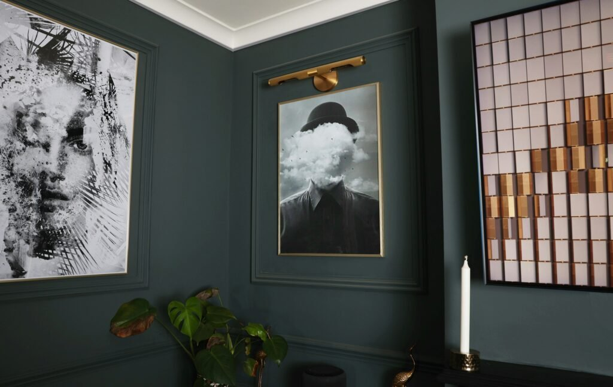
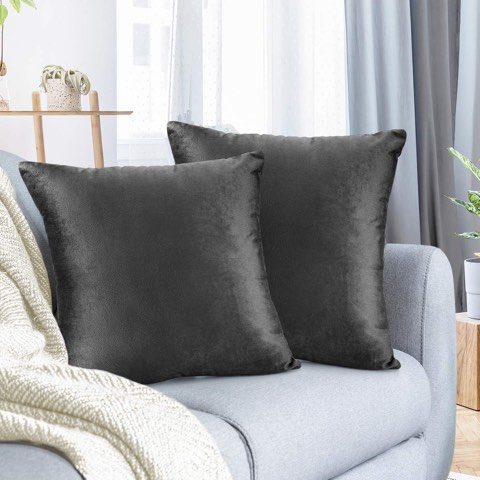
Nestl Cozy Velvet Throw Pillow Covers, 22 x 22 Inch, Soft Solid Charcoal
Shop on AmazonRECYCO Chenille Throw Blanket for Couch, 50 x 60 Inch, Dark Gray
Shop on AmazonFinal Thoughts
None of these 13 ideas require redoing the whole room at once.
Start with lighting and the wall color first, since both have the biggest effect on whether the room reads as cozy or oppressive, then layer in texture and the finishing details.
A moody living room done right genuinely feels like the most restful room in the whole house, not simply the darkest one in it.